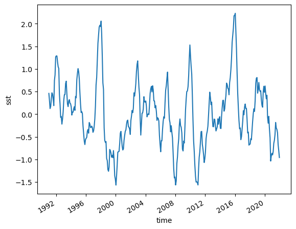
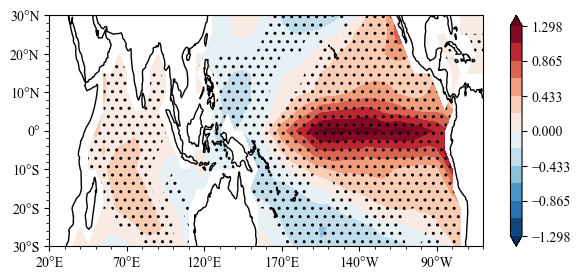

Quick Start¶
This document can tell you how to use sacpy to do Linear Regression quickly!
import useful module¶
[1]:
%load_ext autoreload
%autoreload 2
import sacpy as scp
import xarray as xr
import matplotlib.pyplot as plt
Load Data¶
[2]:
# load sst data
sst = scp.load_sst()['sst']
# get sst anomaly (ssta)
ssta = scp.get_anom(sst,method=0)
[3]:
# get Nino3.4 Index
Nino34 = ssta.loc[:,-5:5,190:240].mean(("lon","lat"))
Nino34.plot()
[3]:
[<matplotlib.lines.Line2D at 0x158238fd0>]

Linear Regression and Plot¶
[5]:
# Linear regression
LinReg = scp.LinReg(x=Nino34,y=ssta)
# plot the regression slope
import sacpy.Map
plt.figure(figsize=[7,3])
m,ax = LinReg.slope.splot(kw2={"stepx":50})
# plot significance test
ax.sig_plot(ssta.lon,ssta.lat,LinReg.p_value,thrshd=0.01)
[5]:
<cartopy.mpl.contour.GeoContourSet at 0x15a09c640>
